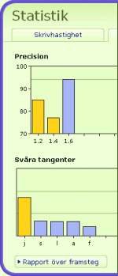

För att se alla resultat, klicka på "Statistik" i menyn till höger.
Du kan titta på diagram över din precision och hur din hastighet har utvecklats. För att få mer detaljerad information över dina framsteg, klicka på "Rapport över framsteg" så kan du se den fullständiga rapporten.
Du kan också printa ut rapporten över dina framsteg.